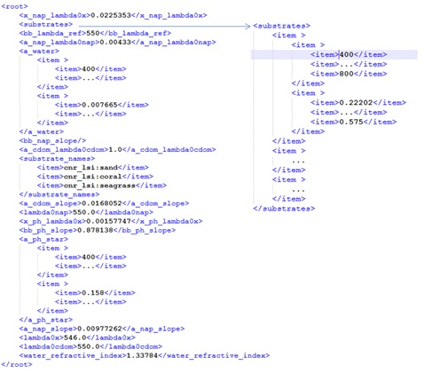
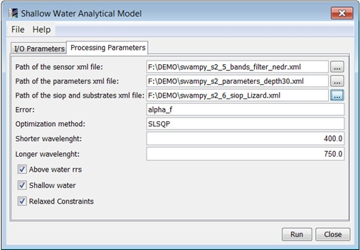

| Model Inversion SWAM Algorithm Specification | |
The Shallow Water Analytical Model has been
developed by CNR-IREA. This processor computes the mapping habitats and depth
by inversion of bio-optical models. It is based in a modified version of Sambuca
(Semi-Analytical Model for Bathymetry, Un-mixing and Concentration Assessment,
M.Wettle & V. Brando, CSIRO Land and Water, 2006) and has been developed in Python.
'SAMBUCA is optimization-driven analytical model for estimating water column constituent concentrations, water column depth, and benthic substrate composition from remote sensing data. Based on an approach conceptualized by Lee et al. (1998, 1999, 2001), SAMBUCA was implemented in an IDL/ENVI environment. Following extensive testing and application of the approach to different data sets, several important modifications and improvements were made to the original Lee et al. (1998, 1999, 2001) approach. Notably, the optical parameterization of both the water column and the benthic substratum - fundamental properties of the model - were re-defined. Furthermore, features such as accessing spectral libraries of optical properties, allowing for more than one substratum to contribute to the remote sensing signal, and tracking the optical depth of a given system, were added.'
| Band | Description |
|---|---|
| depth | Depth in meters. |
| sdi | Substratum detectability index? |
| kd(550) | |
| error_f | The error selected in the parameters. |
| R_sub(550) | |
| sub_1 | Fraction of substrate 1. |
| sub_2 | Fraction of substrate 2. |
| sub_3 | Fraction of substrate 3. |
The SWAM algorithm has been implemented into SNAP with the following features:
See Installation on Windows for the recommended installation steps.
| Parameter | Description |
|---|---|
| xmlpath_sensor | The path of the sensor filters and nedr xml configuration file.
 |
| xmlpath_parameters | The path of the parameters xml configuration file.
 |
| xmlpath_siop | The path of the siop and substrates xml configuration file.
 |
| error_name | The error used in the closure. Should be one of: 'alpha', 'alpha_f', 'lsq', 'f'. |
| opt_method | The optimization method used in the closure. Currently, it should be 'SLSQP'. |
| min_wlen, max_wlen | The shortest and longest wavelengths. The algorithm will select only the rrs bands with central wavelengths inside this range (remember to choose wisely this range: it must be coherent with the chosen sensor filters). |
| above_rrs_flag | If the Above Water rrs flag is active the rrs will be corrected to the in-water rrs. |
| shallow_flag | If the go-shallow flag is active the go-shallow routine will be used to retrieve the depth and the sdi of the shallow waters. |
| relaxed_cons | If the relaxed constraints flag is active, the constraint on the substrates sum will be relaxed from 1 to the range of 0.5-2. |
The parameters described above can be set through the graphical user interface designed in the SNAP Desktop component:
